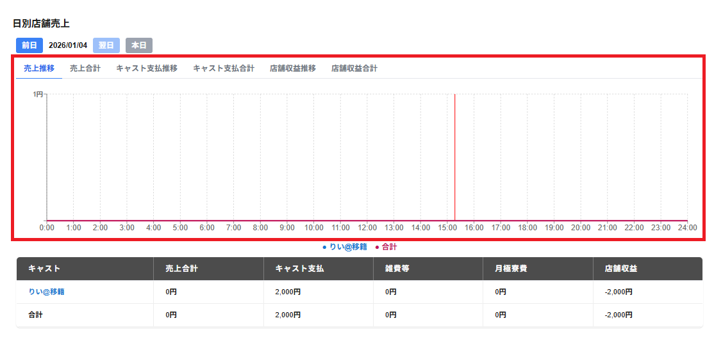

日別店舗売上の画面の上部には以下のタブが表示されます。
・売上推移
時刻帯毎の請求金額が表示されます。
・売上合計
その時刻までの請求金額の合計が表示されます。
・キャスト支払推移
時刻帯毎のキャスト支払金額が表示されます。
・キャスト支払合計
その時刻までのキャスト支払の合計が表示されます。
・店舗収益推移
時刻帯毎の店舗収益が表示されます。
※売上合計からキャスト支払いと雑費等を引いて、月極寮費を足したものが店舗収益になります。
・店舗収益合計
その時刻までの店舗収益の合計が表示されます。
※売上合計からキャスト支払いと雑費等を引いて、月極寮費を足したものが店舗収益になります。
選択のタブで選択した項目に合わせてグラフが表示されます。
グラフの縦軸には金額、横軸には時刻が表示されます。
グラフの下部には、色付きの点とキャスト名が表示され、グラフがどのキャストのものかを示します。
※合計は、全キャストの合計のグラフが表示されます。
グラフの下部のキャスト名・合計をクリックすると表示が薄くなり、クリックしたキャスト名・合計のグラフを非表示にします。
もう一度キャスト名・合計をクリックし、表示が濃くなるとそのキャスト名・合計のグラフを表示します。
※グラフを表示しないようにしたキャストの項目は、一覧の項目にも表示されなくなります。
グラフ上にマウスを合わせると、該当時刻帯の以下の項目が表示されます。
・時刻帯
・合計金額
・キャスト別の金額
